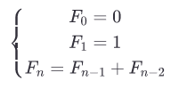

Fibonacci arvud ehk Fibonacci jada
Fibonacci jada on mittenegatiivsete täisarvude jada, kus kaks esimest liiget on vastavalt 0 ja 1 ning alates kolmandast liikmest on iga järgmine liige võrdne kahe eelneva liikme summaga.
Esimesed Fibonacci arvud on: 0, 1, 1, 2, 3, 5, 8, 13, 21, 34, 55, 89, 144, 233, 377, 610, 987, ...
Fibonacci jada kujunemise algoritm:
def Fibonacci(n):
if n < 0:
print("Vale sisend, sisesta mittenegatiivne arv!"
#Esimene Fibonacci arv on 0
elif n == 0:
return 0
#Teine Fibonacci arv on 1
elif n == 1:
return 1
else:
return Fibonacci (n-1)+Fibonacci (n-2)
#Käivitame programmi ja väljastame 6nda liikme jadas
print(Fibonacci(6))